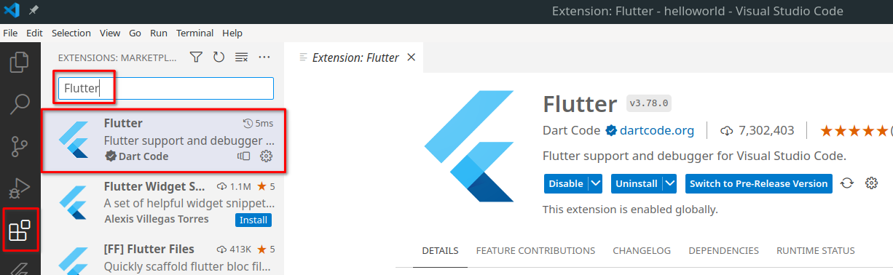
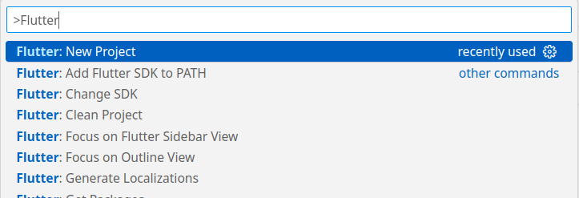
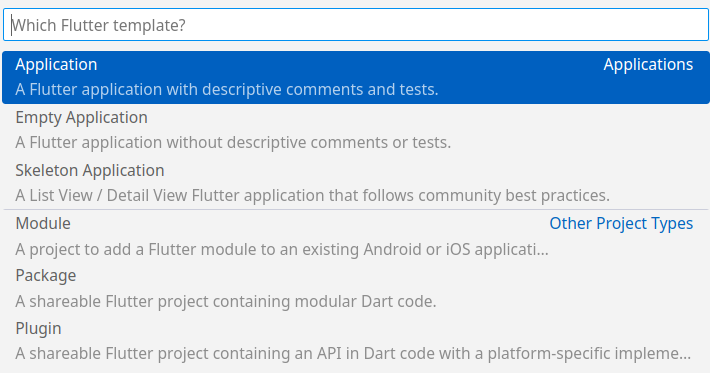
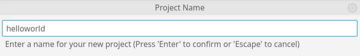
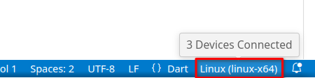
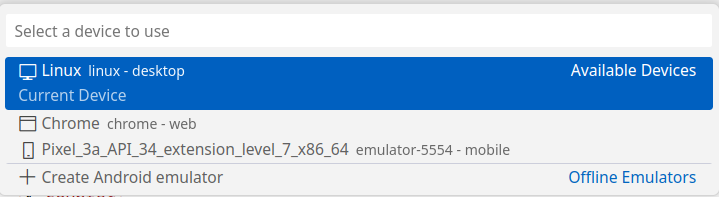
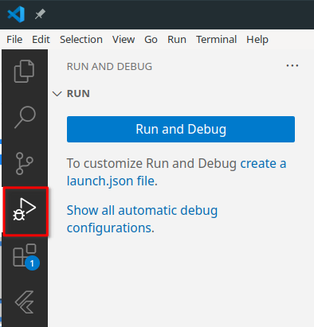
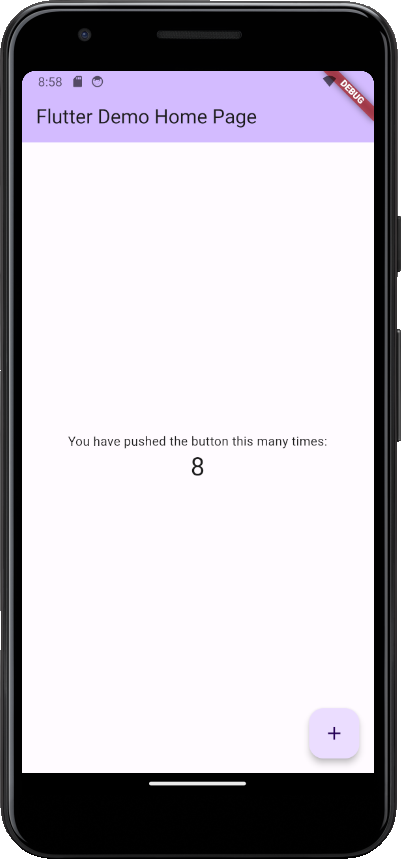
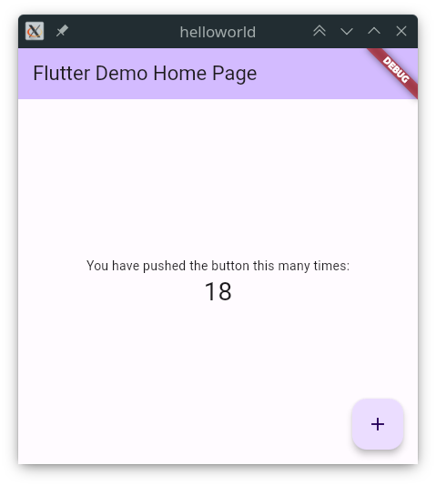
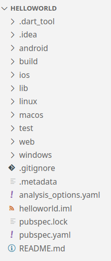

UD5 - 5.2 Introducción a Flutter¶
Introducción¶
Flutter es un framework de código abierto desarrollado por Google para crear aplicaciones nativas multiplataforma. Permite crear aplicaciones para móviles, web y escritorio desde un único código fuente. Utiliza el lenguaje de programación Dart, también desarrollado por Google.
Flutter ha ganado popularidad en los últimos años, por su facilidad de uso, aprendizaje y rendimiento. Cada vez más empresas lo utilizan para desarrollar sus aplicaciones, aunque puede que en un futuro próximo Kotlin Multiplatform, todavía en fase beta, le haga sombra.
Dart¶
Dart es un lenguaje de programación orientado a objetos, con tipado estático y con una sintaxis similar a la de Java o C#. Es un lenguaje compilado, pero también puede ser interpretado en tiempo de ejecución. Es un lenguaje de programación multiparadigma, ya que soporta programación orientada a objetos, programación imperativa y programación funcional.
Como es similar a Java, iremos aprendiendo la sintaxis y características de Dart a medida avancemos en el desarrollo de aplicaciones con Flutter.
Existe una herramienta en línea para probar Dart y Flutter sin necesidad de instalar nada: Dart Pad
Página oficial de Dart con un resumen de la sintaxis básica: https://dart.dev/language
Instalación del entorno de desarrollo¶
Seguiremos la guía de instalación oficial de Flutter preparar el entorno de desarrollo: https://docs.flutter.dev/get-started/install
- System requirements: Es importante leer los requisitos del sistema para poder instalar Flutter.
- Get the Flutter SDK: Descargar e instalar el SDK de Flutter para nuestro sistema operativo.
- Update your path: Añadir la ruta de instalación de Flutter al PATH del sistema.
- flutter doctor: Ejecutar el comando
flutter doctorpara comprobar que tenemos todo lo necesario para desarrollar aplicaciones con Flutter. - Android setup: Opcionalmente, podemos instalar el Android SDK y configurar un emulador de Android para poder probar nuestras aplicaciones.
Configuración del entorno de desarrollo VS Code¶
Para desarrollar aplicaciones con Flutter, podemos utilizar cualquier editor de texto o IDE. En este caso, utilizaremos Visual Studio Code. Si todavía no lo tenemos instalado, podemos descargarlo desde la página oficial: https://code.visualstudio.com/
Una vez abierto VS Code, instalaremos la extensión Flutter extension. Esta extensión facilitará el desarrollo así como la ejecución y depuración de aplicaciones.

Crear un proyecto desde VS Code¶
Desde VS Code podemos crear un proyecto de Flutter desde la paleta de comandos (Ctrl+Shift+P). Buscamos el comando Flutter: New Project y seguimos los pasos para crear el proyecto.

Seleccionamos la plantilla base que queremos utilizar. En este caso, se ha elegido Application.

Aparecerá una ventana emergente para seleccionar el directorio donde se creará el proyecto. Creará un nuevo directorio con el nombre del proyecto.
Por último, nos solicitará el nombre del proyecto. Este nombre se utilizará para crear el paquete de la aplicación, por lo que debe ser único. En este caso, se ha elegido helloworld.

Una vez creado el proyecto, para ejecutarlo, primero debemos seleccionar el dispositivo de destino. Esto lo podemos hacer desde la barra inferior de VS Code.

Y seleccionamos el dispositivo de destino.

Tiene una opción para crear un dispositivo emulador de Android de forma sencilla.
Para lanzar la aplicación, iremos a Run and Debug, al pulsar el botón, compilará la aplicación y la lanzará en el dispositivo seleccionado.


Crear un proyecto desde la línea de comandos¶
Alternativamente, podemos crear un proyecto de Flutter desde la línea de comandos, podemos ejecutar flutter create <nombre_proyecto>.
Ejemplo de creación de un proyecto base desde la líena de comandos de Linux:
$ flutter create helloworld
Creating project helloworld...
Resolving dependencies in helloworld...
Got dependencies in helloworld.
Wrote 129 files.
All done!
You can find general documentation for Flutter at: https://docs.flutter.dev/
Detailed API documentation is available at: https://api.flutter.dev/
If you prefer video documentation, consider: https://www.youtube.com/c/flutterdev
In order to run your application, type:
$ cd helloworld
$ flutter run
Your application code is in helloworld/lib/main.dart.
Una vez creado el proyecto, nos indica que debemos entrar en el directorio que se ha creado y ejecutar el comando flutter run para ejecutar la aplicación.
Nos solicita que elijamos un dispositivo de destino. En este caso, se elige Linux, pero también se puede elegir Chrome para ejecutar la aplicación en el navegador.
$ cd helloworld/
$ flutter run
Connected devices:
Linux (desktop) • linux • linux-x64 • Ubuntu 22.04.3 LTS 5.15.0-52-generic
Chrome (web) • chrome • web-javascript • Google Chrome 119.0.6045.123
[1]: Linux (linux)
[2]: Chrome (chrome)
Please choose one (or "q" to quit): 1
Launching lib/main.dart on Linux in debug mode...
Building Linux application...
Syncing files to device Linux... 79ms
Flutter run key commands.
r Hot reload. 🔥🔥🔥
R Hot restart.
h List all available interactive commands.
d Detach (terminate "flutter run" but leave application running).
c Clear the screen
q Quit (terminate the application on the device).
A Dart VM Service on Linux is available at: http://127.0.0.1:35111/9Neb9ZazZeE=/
The Flutter DevTools debugger and profiler on Linux is available at: http://127.0.0.1:9100?uri=http://127.0.0.1:35111/9Neb9ZazZeE=/
Si todo ha ido bien, se abrirá una ventana con la aplicación en ejecución.

Estructura de un proyecto¶
En el ejemplo anterior, se ha creado un proyecto con la estructura por defecto. Veamos qué directorios y archivos se han creado:

Lo primero que puede llamarlos la atención son los directorios con nombre de distintas plataformas: android, ios, linux, macos, web y windows. Estos directorios contienen el código necesario para compilar la aplicación para cada una de las plataformas.
Cada paquete necesita algunos metadatos para poder especificar sus dependencias. Todos estos metadatos van en el pubspec del paquete: un archivo llamado pubspec.yaml que está escrito en el lenguaje YAML.
El archivo pubspec.yaml contiene la configuración del proyecto, así como las dependencias que utiliza. Es similar al archivo package.json de Node.js.
dependencies: Dependencias del proyecto. Especifica los paquetes en los que se basa la aplicación. Los paquetes de Flutter se pueden encontrar en pub.dev.dev_dependencies: Dependencias de desarrollo del proyecto. Se definen los paquetes utilizados exclusivamente en entorno de desarrollo, como por ejemplo linters o test.flutter: Configuración específica de Flutter. Más información en https://docs.flutter.dev/tools/pubspec.
Widgets¶
En Flutter, "todo" es un widget. Los widgets son los bloques de construcción básicos de la interfaz de usuario, podemos compararlo a los componentes que creamos en la unidad anterior. Cada widget es una clase que hereda de la clase Widget.
Referencia a los widgets básicos en Flutter: https://docs.flutter.dev/ui/widgets/basics
Primera aplicación siguiendo el tutorial oficial¶
La mejor forma de aprender los conceptos básicos de Flutter es siguiendo el tutorial oficial.https://codelabs.developers.google.com/codelabs/flutter-codelab-first
Está disponible en varios lenguajes, entre ellos el español, está organizado en pasos fáciles de seguir e incluye vídeos explicativos.